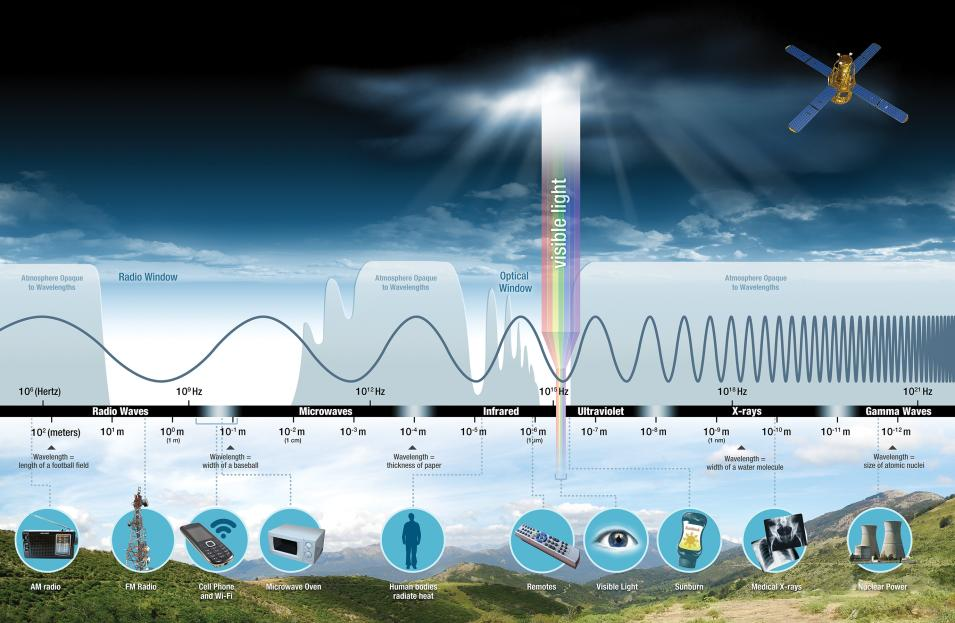
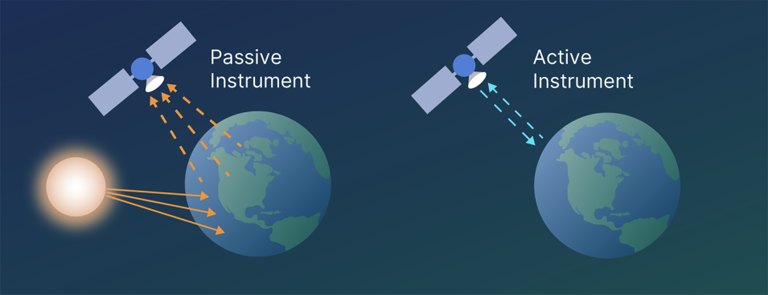
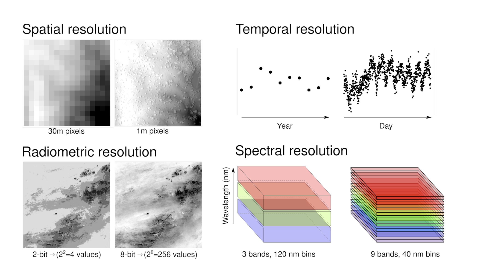

1 Introduction to Remote Sensing
1.1 Summary
Overview
This week served as a foundational introduction to remote sensing, a field I’ve always found fascinating from my background as an environmental scientist. Remote sensing is essentially about acquiring and analysing information about the Earth’s surface from a distance, primarily using sensors on aircraft and satellites.
1.1.1 Sensor Technologies and Data Collection
One of the major insights was learning how sensor technologies work. We discovered that remote sensing platforms monitor and record electromagnetic radiation reflected from the Earth at specific wavelengths. This means they capture both the light we can see and energy in wavelengths our eyes cannot detect. Sensor technologies record electromagnetic radiation across various wavelengths, including those beyond visible light. This allows us to perceive features and characteristics not directly observable by the human eye. Different materials have unique spectral signatures, reflecting and absorbing energy differently across the electromagnetic spectrum. This is visualised in the figure below.

A key concept here is the difference between active and passive sensors. Passive sensors, such as optical cameras, simply measure natural radiation (often sunlight reflected from the surface), whereas active sensors, like those used in radar satellites, emit their own signals to detect reflections.

1.1.2 Types of Data Resolution
Our discussions also focused into the different types of resolutions that are crucial to the quality and utility of remote sensing data:
- Spatial Resolution: Refers to the size of each pixel or grid cell in an image. Higher spatial resolution is ideal for capturing fine-scale details, though it usually comes at the cost of broader coverage.
- Spectral Resolution: Indicates the number of wavelength bands a sensor can capture. More bands allow for better discrimination of different materials on the ground.
- Temporal Resolution: Relates to how frequently a satellite revisits the same area. For example, while high-resolution sensors offer excellent detail, they might not revisit as frequently as systems like MODIS.
- Radiometric Resolution: Reflects the sensor’s sensitivity to differences in the intensity of the radiation. Higher radiometric resolution means that even subtle distinctions can be detected.

Learning about these trade-offs really got me thinking—choosing the right sensor depends on the specific requirements of the analysis, whether that means capturing high resolution details or tracking changes over time.
1.1.3 Atmospheric Interference
Another critical area was atmospheric interference. The atmosphere doesn’t simply let all of the incoming radiation pass through unaltered. Factors such as cloud cover, scattering, and the angle at which light is reflected off surfaces can change the intensity and quality of the data recorded. Understanding these distortions is key, as they can lead to inaccuracies if not properly accounted for. This underscored the importance of techniques like sensor calibration and atmospheric correction, which our practical session touched upon.
1.1.4 End User Data Analysis
On the practical side, we were introduced to how end users can download and manipulate remote sensing data from platforms like ESA’s Sentinel and USGS’s Landsat. Tools such as QGIS and SNAP enable us to process these huge datasets and extract valuable insights.
1.2 Applications
Selecting the appropriate sensor involves critical trade-offs in remote sensing applications. High-resolution sensors provide detailed local information but may lack the temporal frequency of moderate-resolution systems like MODIS, which offer more frequent global coverage. This necessitates carefully balancing spatial detail and temporal frequency to align with specific study objectives.
Remote sensing has proven pivotal in environmental mapping, with satellites monitoring land cover changes and deforestation. Hansen Hansen et al. (2013) demonstrated this by utilising 30-metre resolution Landsat data to map global forest loss and gain from 2000 to 2012. This analysis revealed a loss of 2.3 million square kilometres and a gain of 0.8 million square kilometres during that period. Building on this work, the Global Forest Watch platform (Global Forest Watch, 2025) exemplifies how the practical application of remote sensing research can help communicate science and provide actionable insights. By leveraging Landsat’s 30-meter resolution data, it provides near-real-time forest monitoring capabilities. This approach enables both long-term trend analysis and actionable environmental insights, effectively balancing spatial and temporal resolution needs.
The embedded map and chart from Global Forest Watch (Global Forest Watch, 2025) illustrate global tree cover loss from 2000 to 2023. Analyzing this data helps identify regions experiencing significant deforestation and investigate potential causes, such as agricultural expansion or logging activities. This information is crucial for policymakers, conservationists, and researchers aiming to develop strategies to mitigate forest loss and promote sustainable land use practices.
Moreover, the trend towards multi-sensor data fusion is evident in contemporary studies. Chakraborty & Kant’s 2020 study (Chakraborty & Kant, 2020) innovatively combined Landsat-8 thermal bands with MODIS data to map Delhi’s urban heat islands, demonstrating how multi-sensor fusion can overcome individual system limitations. This method leverages the high spatial resolution of Landsat-8 and the frequent temporal coverage of MODIS, providing a comprehensive understanding of urban heat distribution. Meanwhile Richards et al. (Richards et al., 2021) used Sentinel-2’s 10m resolution and LiDAR to map green infrastructure in London, revealing how high spatial resolution helps identify small urban gardens that moderate-temperature extremes. This resonated with our discussions about spectral resolution - their use of red-edge bands (705nm) helped distinguish stressed vegetation crucial for climate adaptation planning.
Also interesting was Gevaert et al.’s 2022 paper (Gevaert et al., 2022) using Sentinel-1 radar to map informal settlements in Nairobi. The active sensor’s cloud-penetration ability (crucial in tropical regions) and texture analysis of building materials showed how remote sensing can address social sustainability challenges. It made me reconsider my initial focus on environmental applications - these techniques could revolutionize urban poverty mapping while lacking high-res optical imagery.
As remote sensing technology accelerates—with machine learning breakthroughs and novel sensor networks—we’re witnessing an explosion of applications that continues to grow. What excites me most is how these technological leaps are creating new interdisciplinary possibilities every day. This endless horizon of applications positions remote sensing as one of our most dynamic tools for understanding and improving our planet.
1.3 Reflection
Looking back on this first week, I feel a mix of excitement and challenge. It’s exciting to reconnect with core Environmental Science concepts I’ve studied before — like seeing deforestation or urban climate impacts through the lens of real world data and applications has been really thought provoking. Remote sensing adds a whole new dimension to topics I was already passionate about, letting me visualise and quantify changes that I often only discuss abstractly because of the lack ofaccess to the data. At the same time, diving into the technical side (mastering the jargon of spectral bands, resolutions, and sensor types) has been challenging. There were moments when the details of electromagnetic wavelengths or data processing felt a bit overwhelming. Yet, working through those complexities has been rewarding, as it’s giving me a more concrete understanding of how we observe our planet.
As an environmental scientist with passion in urban sustainability, I am also fascinated by how remote sensing technology has evolved. Beyond its research applications, this technology is having concrete impacts on policy decisions. Remote sensing data now directly informs urban planning and conservation strategies. The technical advances in how we collect, store, process, and visualise this data it’s also fascinatinf for me and opens up entirely new possibilities that would have seemed impossible just years ago.